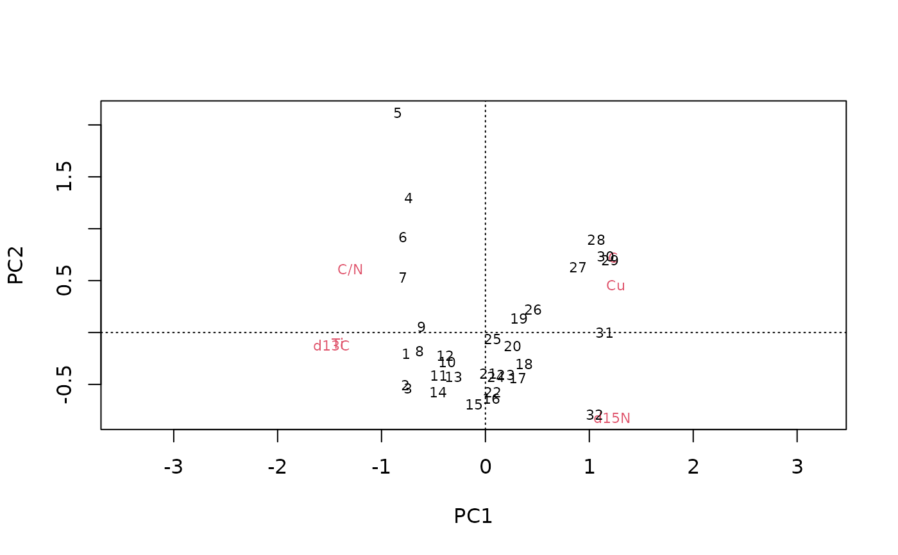

Calls plot or another (base) plotting function on all models, arranging the output in subplots.
A nested_analysis object (or subclass)
Passed to the plot function. Tidy evaluation is supported, and arguments are evaluated within a transposed version of x for each row.
The plot title
Force a number of rows or columns in the output
A function that produces graphical output
The column containing the model
The column in which the output of the plot function should be placed
the input, invisibly
nd <- nested_data(
alta_lake_geochem,
qualifiers = c(age, depth, zone),
key = param,
value = value,
trans = scale
)
na <- nested_analysis(nd, vegan::rda, X = data)
plot(na)
